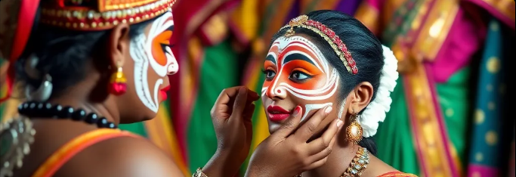
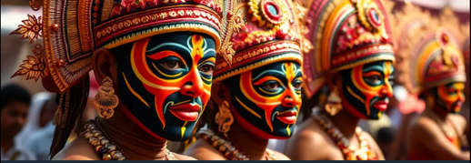

Support Traditional Artists
Help preserve India's cultural heritage by supporting theatre artists and troupes
Crowdfunding allows passionate individuals like you to make a direct impact on preserving India’s rich traditional arts. Every contribution you make goes 100% to the artists and their communities—whether it's renovating old training centers, preserving historic costumes, or supporting day-to-day needs of performers. Your generosity helps sustain their art and legacy for future generations.

Kathakali Troupe Renovation
Help renovate our 50-year-old training center that has produced hundreds of Kathakali artists.
Raised: ₹1,25,000
Goal: ₹5,00,000
Contribute Now

Yakshagana Costume Preservation
Help preserve century-old Yakshagana costumes that are deteriorating due to lack of proper storage.
Raised: ₹2,10,000
Goal: ₹3,00,000
Contribute Now
What Our Supporters Say

"I'm so happy to support such a noble cause. The contribution process was smooth, and I feel proud knowing that every rupee is going to the artists directly." – Ritu Sharma
"This platform is doing a great job in reviving Indian traditions. I contributed to the Yakshagana campaign, and the updates I received were heartwarming." – Arvind Menon
"Supporting the Kathakali troupe made me feel connected to my roots. I highly recommend this to anyone who values our culture." – Sneha Iyer